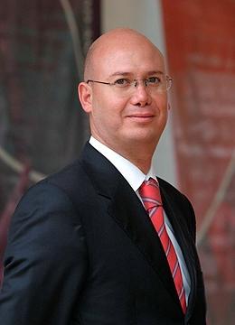

Magistrado Salvador O. Nava Gomar
Doctor en Derecho por la Universidad Complutense de Madrid.
Especialista en Derecho Constitucional y Ciencia Política por el Centro de Estudios Constitucionales de Madrid.
Licenciado en Derecho con Mención Honorífica.
Fue Director de la Escuela de Derecho de la Universidad Anáhuac México Sur.
Miembro del Sistema Nacional de Investigadores.
Ha ocupado distintos cargos en el Poder Legislativo Federal.
Fue investigador de las Cortes de Diputados de España.
Fue miembro de la Comisión Técnica del Grupo Oaxaca que redactó la Ley Federal de Transparencia y Acceso a la Información Pública Gubernamental.
Dirige la Serie “Estudios Constitucionales”, de la Editorial Miguel Ángel Porrúa.
Profesor invitado de la Universidad Complutense de Madrid, del Instituto de Estudios Parlamentarios de España, de la Universidad de Salamanca, de la Universidad de Valladolid, de la Universidad de La Coruña, de la Universidad del Estado de Nueva York, de la Universidad de Buenos Aires, de la Pontificia Universidad Católica del Perú, de la Universidad Nacional del Uruguay, y en más de una veintena de universidades mexicanas.
Presidente del Instituto Iberoamericano para el Fortalecimiento del Poder Legislativo.
Miembro fundador e integrante del Consejo Directivo de “Libertad de Información México”.
Fue Secretario del Consejo Directivo del “Observatorio Ciudadano para la Transparencia”.
Miembro del Consejo Ciudadano Consultivo del Instituto Federal de Acceso a la Información Pública.
Es miembro del Consejo Editorial de la Revista Iberoamericana de Derecho Procesal Constitucional, de la revista Lex Tantum, de las revistas Derecho Comparado de la Información y Comparative Media Law Journal, así como de la sección “Justicia a Debate” del periódico El Universal.
Socio fundador de la firma Derecho y Política Consultores, con la que asesoró, capacitó y representó a diversos partidos políticos; participó como asesor en múltiples procesos de controversia constitucional, acciones de inconstitucionalidad y juicios de amparo; asesoró en materia jurídico-electoral al Instituto Federal Electoral, diversos institutos estatales electorales y entidades de la Administración Pública Federal; elaboró iniciativas de ley y dictámenes legislativos en materia electoral y otras; capacitó a legisladores y servidores públicos locales, federales e internacionales en materia electoral, de producción normativa, derecho procesal constitucional, técnica legislativa y de diseño institucional, normativo, funcional y orgánico.
Fue miembro de la Red Mexicana para la Democracia con calidad (grupo impulsor de la iniciativa para la reelección consecutiva de legisladores).
Fue miembro fundador del Grupo México Práctico.
Fue Secretario Técnico de la Comisión Especial para la Reforma del Estado en el Senado de la República.
Organizó el Primer Concurso de Juicios Orales, en el que participaron más de cuarenta universidades del país.
Fue investigador de tiempo completo del Instituto de Investigaciones Jurídicas de la UNAM.
Fue miembro del jurado del Premio Nacional de Periodismo.
Fue miembro del Consejo Asesor del Programa Estado de Derecho para América Latina y el Caribe, de la fundación alemana Konrad Adenauer.
Es autor de “Dinámica constitucional: entre la interpretación y la reforma. La encrucijada mexicana” (Universidad Complutense de Madrid, Instituto de Investigaciones Jurídicas de la UNAM, Universidad Anáhuac del Sur y Miguel Ángel Porrúa); del “Manual de Técnica Legislativa” (Universidad de Nueva York, Universidad Anáhuac México Sur, USAID, Konrad Adenauer), y otros libros; de cuarenta publicaciones científico-jurídicas y de ciento cincuenta y un artículos de prensa en materia de Derecho Público, en lo general, y de Derecho Constitucional, Electoral y Parlamentario, en lo particular.
Ha impartido ciento sesenta y un conferencias, ponencias y presentaciones, así como noventa y cuatro cátedras en todos los grados académicos del Derecho, en diez países y en todos los estados de la República Mexicana.